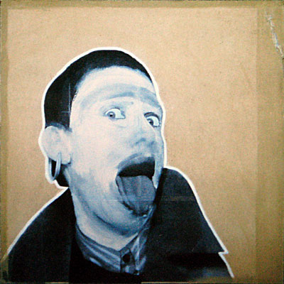

OVA participates at "KE98" Kunstnernes Efterårsudstillingen at Den Frie, Copenhagen, Denmark. |


Self portrait 1 & 2
Size:120 cm x 120 cm.
Photo/Collage. Bought by The Copenhagen Culture Foundation.
OVA participates at "KE98" Kunstnernes Efterårsudstillingen at Den Frie, Copenhagen, Denmark. |
